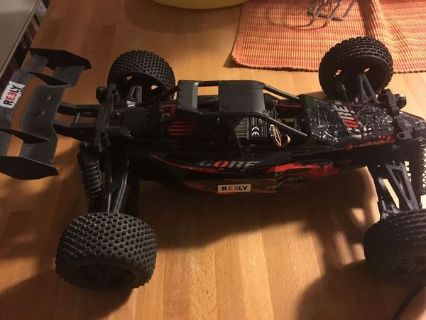
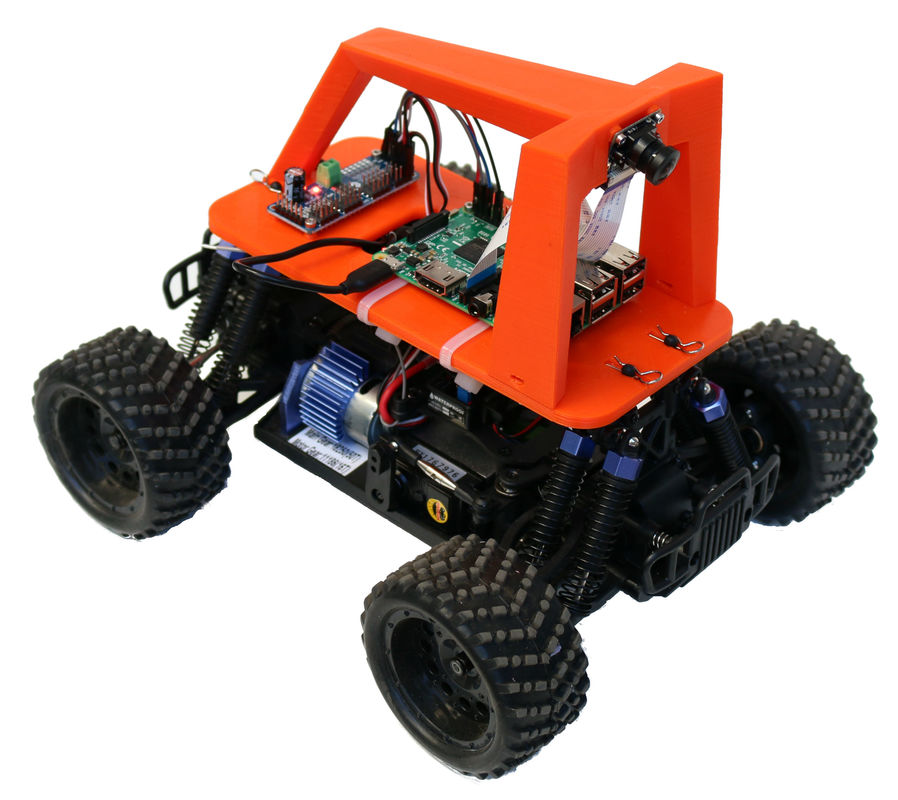
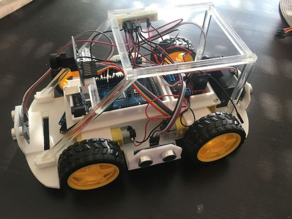

Chapter 2 Resources
In this section interesting resources for different topics are listed
2.1 Meetups
2.1.1 Esslinger Makerspace Projekt: Autonomen RoboCar bauen
https://www.meetup.com/Esslingen-Makerspace/
Ob ihr euer eigenes RoboCar entwickeln wollt, oder lieber ein kleines Team bilden wollt, hier seit ihr richtig.

2.1.2 Autonomous Mobility Berlin
https://www.meetup.com/autonomous-mobility-berlin/
This is a group for anyone interested and intrigued by Autonomous Mobility, Self-Driving Cars (SDC). Robots. We will cover topics on related technologies - Computer Vision, Deep Learning, Reinforcement learning, evolutionary computation, Sensor Fusion, ROS etc..
2.2 RoboCar projects
2.2.1 DIY RoboCars
https://diyrobocars.com/about/
This is the sister site to DIY Drones and resource/community companion to the DIY Robocars Meetup Group. Created by Chris Anderson of 3DR.
2.2.2 Donkey car
An opensource DIY self driving platform for small scale cars. RC CAR + Raspberry Pi + Python (tornado, keras, tensorflow, opencv, ….)
The documentation of the project includes:
- Assemble hardware.
- Install software.
- Calibrate your car.
- Start driving.
- Train an autopilot.
- Experiment with simulator

The code can be found at github
2.2.3 Sunfounder Smart Video Car Kit for Raspberry Pi with Android App
https://www.sunfounder.com/robotic-drone/smartcar/smart-video-car-kit/rpi-car.html
This is a complete learning kit based on Raspberry Pi with Android App. For better learning, an elaborately-written user manual, code with explanation and thorough schematic diagrams are provided.
Available at amazon

Sunfounder software is found at github
Documentation can be found at https://www.sunfounder.com/learn/category/Smart-Video-Car-V2-0-for-Raspberry-Pi-Pi-Car-V.html
2.2.4 Kuman Professional WIFI Smart Robot Model Car Kit Videokamera for Raspberry Pi 3
Einfache Montage und Bedienung: Das ist ein komplettes WIFI-Lern-Smart-Roboter-Kit mit 8GB-Karte basierend auf Raspberry Pi 3 Controlled by ISO Android App. Für den Betrieb leicht, Code of smart Robot System sind in 8 GB Karte vorinstalliert. Für ein besseres Lernen, eine ausführliche schriftliche Benutzerhandbuch, Code mit Erklärung und schematische Diagramme werden von kuman zur Verfügung gestellt.
2.3 Hardware
In this section hardware related information is presented
2.3.1 KOMPONENTENLISTE FÜR EIN FERNGESTEUERTES ROBOTER AUTO
https://custom-build-robots.com/raspberry-pi-roboter-auto-komponenten
Ingmar Stapel from Munich keeps this list up to date
- ROBOTER AUTO GEHIRN – RASPBERRY PI 3 MODEL B
- RASPBERRY PI – KAMERAS IM ÜBERBLICK
- MOTORTREIBER L298N H-BRÜCKE
- STEP-DOWN CONVERTER (MEINE EMPFEHLUNG)
- MOTOREN
2.3.2 Motor control
How to control steer and throttle
2.3.2.1 PCA9685
2.3.2.1.1 16-KANAL PCA9685 SERVO KONTROLLER – TEIL 1 EINFÜHRUNG UND AUFBAU
- 16 channels
- From Adafruit
- Connect to Raspberry via I2C
- 3.3V supply
- For motor control together with L298N H-bridge
| Raspberry_Pi | Servo_Driver |
|---|---|
| Pin 1 (3,3 V) | VCC |
| Pin 6 (GND) | GND |
| GPIO 2 (SDA) | SDA |
| GPIO 3 (SCL) | SCL |
2.3.2.1.2 Adafruit 16 Channel Servo Driver with Raspberry Pi
https://learn.adafruit.com/adafruit-16-channel-servo-driver-with-raspberry-pi/overview
Good explanation with link to github code and wiring example
2.3.2.2 Wii sensor
Could use wii sensor instead of camera
2.4 Simulators
2.4.1 Donkey Simulator
http://docs.donkeycar.com/guide/simulator/
Experiment with training a donkey car to drive in simulation. This simulator is built on the the Unity game platform, uses their internal physics and graphics, and connects to a donkey Python process to use our trained model to control the simulated Donkey.
2.5 Software
2.5.1 Udacitiy open source SDC
https://github.com/udacity/self-driving-car
At Udacity, we believe in democratizing education. How can we provide opportunity to everyone on the planet? We also believe in teaching really amazing and useful subject matter. When we decided to build the Self-Driving Car Nanodegree program, to teach the world to build autonomous vehicles, we instantly knew we had to tackle our own self-driving car too.
Together with Google Self-Driving Car founder and Udacity President Sebastian Thrun, we formed our core Self-Driving Car Team. One of the first decisions we made? Open source code, written by hundreds of students from across the globe!
2.5.2 connect raspberry with xbox controller
good tutorial with example code https://tutorials-raspberrypi.de/raspberry-pi-xbox-360-controller-steuern/
you find a code example
import RPi.GPIO as GPIO
import math
import xbox
GPIO_LED_GREEN = 23
GPIO_LED_RED = 22
GPIO_LED_YELLOW = 27
GPIO_LED_BLUE = 17
GPIO_SERVO_PIN = 25
GPIO.setmode(GPIO.BCM)
GPIO.setwarnings(False)
GPIO.setup(GPIO_LED_GREEN, GPIO.OUT)
GPIO.setup(GPIO_LED_RED, GPIO.OUT)
GPIO.setup(GPIO_LED_YELLOW, GPIO.OUT)
GPIO.setup(GPIO_LED_BLUE, GPIO.OUT)
GPIO.setup(GPIO_SERVO_PIN, GPIO.OUT)
def updateServo(pwm, angle):
duty = float(angle) / 10.0 + 2.5
pwm.ChangeDutyCycle(duty)
def angleFromCoords(x,y):
angle = 0.0
if x==0.0 and y==0.0:
angle = 90.0
elif x>=0.0 and y>=0.0:
# first quadrant
angle = math.degrees(math.atan(y/x)) if x!=0.0 else 90.0
elif x<0.0 and y>=0.0:
# second quadrant
angle = math.degrees(math.atan(y/x))
angle += 180.0
elif x<0.0 and y<0.0:
# third quadrant
angle = math.degrees(math.atan(y/x))
angle += 180.0
elif x>=0.0 and y<0.0:
# third quadrant
angle = math.degrees(math.atan(y/x)) if x!=0.0 else -90.0
angle += 360.0
return angle
if __name__ == '__main__':
joy = xbox.Joystick()
pwm = GPIO.PWM(GPIO_SERVO_PIN, 100)
pwm.start(5)
while not joy.Back():
# LEDs
led_state_green = GPIO.HIGH if joy.A() else GPIO.LOW
led_state_red = GPIO.HIGH if joy.B() else GPIO.LOW
led_state_yellow = GPIO.HIGH if joy.Y() else GPIO.LOW
led_state_blue = GPIO.HIGH if joy.X() else GPIO.LOW
GPIO.output(GPIO_LED_GREEN, led_state_green)
GPIO.output(GPIO_LED_RED, led_state_red)
GPIO.output(GPIO_LED_YELLOW, led_state_yellow)
GPIO.output(GPIO_LED_BLUE, led_state_blue)
# Servo
x, y = joy.leftStick()
angle = angleFromCoords(x,y)
if angle > 180 and angle < 270:
angle = 180
elif angle >= 270:
angle = 0
updateServo(pwm, angle)
joy.close()
pwm.stop()2.5.3 RASPBERRY PI RC CONTROL
2.5.4 Python class to support xbox 360 controller under Linux on RaspberryPi
Python class to support reading xbox 360 wired and wireless controller input under Linux. Makes it easy to get real-time input from controller buttons, analog sticks and triggers. Built and tested on RaspberryPi running Raspbian.
code example
import xbox
joy = xbox.Joystick() #Initialize joystick
if joy.A(): #Test state of the A button (1=pressed, 0=not pressed)
print 'A button pressed'
x_axis = joy.leftX() #X-axis of the left stick (values -1.0 to 1.0)
(x,y) = joy.leftStick() #Returns tuple containing left X and Y axes (values -1.0 to 1.0)
trigger = joy.rightTrigger() #Right trigger position (values 0 to 1.0)
joy.close() #Cleanup before exit2.5.5 xbox driver for mac
2.5.6 Konzept für softwareschichten
Die Softwareschichten sollen es ermöglichen das teile der software zwischen den bastlern ausgetauscht werden können bzw. unabhängig voneinander entwickelt werden können
Arduino
- comm schicht
- actor schicht
- input
- geschwindigkeit cm/s resolution TBD
- lenkwinkel grad resolution 0.1 degree
- input
- sensor schicht
- ultraschall
Raspi
- comm schicht
- actor schicht
- arduino USB seriell oder I2C auf PCA
- wlan/USB für den controller TCP/IP
- wlan für streaming des videos
- SAMBA zum auslesen des USB sticks
- sensor schicht
- kamera
- neuronales netz/ oder läuft auf PC
- USB stick für trainingsdatenaufzeichnung
- output
- geschwindigkeit cm/s resolution TBD
- lenkwinkel grad resolution 0.1 degree
- geschwindigkeit cm/s resolution TBD
- input über WLAN vom Laptop
- geschwindigkeit cm/s resolution TBD
- lenkwinkel grad resolution 0.1 degree
- geschwindigkeit cm/s resolution TBD
Laptop
- comm schicht
- controller
- USB stick auslesen
- verbindung zum Raspberry
- controller
- data pre-processing
- sensor data
- camera data
- downsampling
- color scheme
- neuronales netz training
- output
- geschwindigkeit cm/s resolution TBD
- lenkwinkel grad resolution 0.1 degree TBC
- geschwindigkeit cm/s resolution TBD